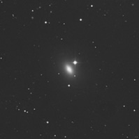
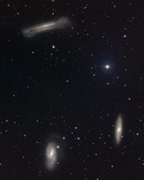
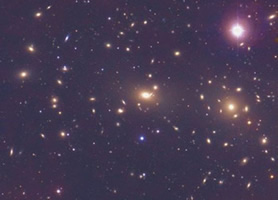

Galaxies are not distributed evenly thoroughout the Universe, but instead tend to congregate in groups and clusters. The ‘environment’ of a galaxy is described by how other galaxies are distributed in its immediate neighbourhood.
|

The isolated galaxy NGC821.
Credit: DSS |

The Leo group.
Credit: DSS |

The Coma cluster.
Credit: DSS |
- Isolated galaxies: Galaxies are rarely found alone. Those that have no major companions (but may still have a few small satellites) are refered to as isolated.
- Galaxy groups are by far the most common environment in which galaxies are found. While a group may contain up to 100 galaxies, only a few of these galaxies will be as massive as the Milky Way. The Local Group, which contains the Milky Way and Andromeda galaxies, is a fairly typical small group.
- Galaxy Clusters may contain between a few hundred and several thousand galaxies, with potentially hundreds of galaxies as large as the Milky Way. This is perhaps the best studied of the galaxy environments, as many bright galaxies are observed per observation. The nearest, and best studied, major clusters are the Virgo and Coma clusters.
Interactions between galaxies and their environments play an important role in galaxy formation and evolution. They may also be responsible for the morphology density relation which indicates that early-type (elliptical and S0) galaxies are preferentially located in high density environments, while late-type galaxies are preferentially located in low density environments.